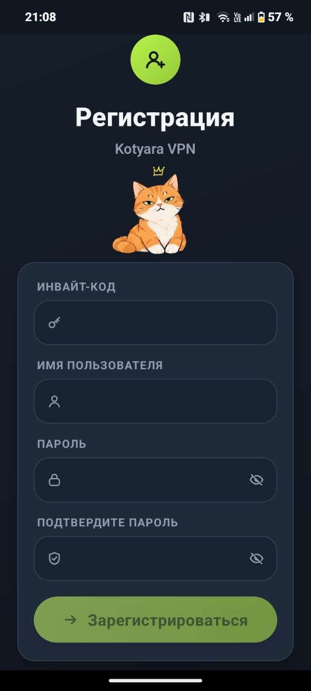
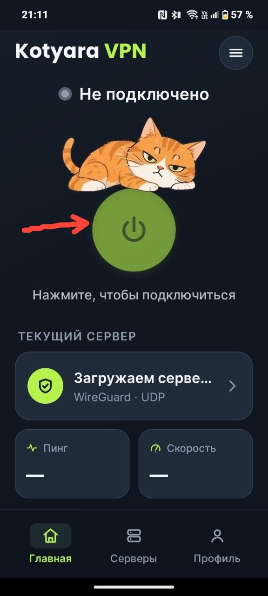

Телефон или планшет Android
Займёт около пяти минут. Понадобится код приглашения — 11 символов с дефисом.
Скачать приложение APK · Android 7 или новееСкачайте приложение
Нажмите кнопку «Скачать приложение» выше. Телефон может спросить разрешение на скачивание — нажмите «Разрешить». Файл размером около 75 МБ сохранится в папку «Загрузки».
Не скачивается? Откройте страницу всех файлов и нажмите файл с окончанием .apk.
Откройте файл и нажмите «Установить»
Когда загрузка закончится, нажмите «Открыть» в уведомлении или найдите файл в папке «Загрузки». Появится окно «Установить приложение?» — нажмите «Установить» и подождите несколько секунд.
Если телефон попросит разрешение
Может появиться вопрос «Разрешить установку из этого источника?». Включите переключатель и нажмите «Установить» ещё раз. Это обычное разрешение, оно нужно один раз.
Откройте приложение и нажмите «Регистрация»
На экране входа, под полями для логина и пароля, есть кнопка «Регистрация». Нажмите её — откроется форма, где нужно ввести код приглашения.
Заполните форму регистрации
Введите инвайт-код (11 символов с дефисом), придумайте имя пользователя и пароль, затем повторите пароль в поле «Подтвердите пароль» и нажмите «Зарегистрироваться».

Запомните пароль
Код приглашения одноразовый, а придуманный пароль понадобится при каждом входе в приложение. Запишите его.
Нажмите круглую кнопку подключения
После регистрации откроется главный экран. На нём — большая круглая кнопка с изображением питания. Нажмите её и подождите 2–5 секунд: надпись сверху сменится с «Не подключено» на «Подключено».

Ниже видно, к какому серверу вы подключены, пинг и скорость. Если сервер не тот, который нужен, — откройте раздел «Серверы» внизу экрана и выберите другой.
Проверка
Откройте любой сайт. Если он открывается — всё работает. VPN остаётся включённым, пока вы сами не нажмёте кнопку ещё раз.
Если что-то пошло не так
- «Пакет недействителен или повреждён» — файл скачался не до конца. Удалите его из «Загрузок» и скачайте заново, лучше по Wi-Fi.
- «Приложение не установлено» — та же причина. Проверьте, что в «Загрузках» лежит файл около 75 МБ, и запустите его снова.
- Код приглашения не принимается — проверьте дефис и что код ещё не использован. Один код — один человек.
- Не подключается — нажмите «Отключить» и снова «Подключиться», проверьте интернет.
Больше подсказок — на странице «Если что-то не работает».